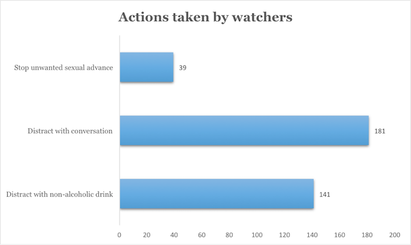
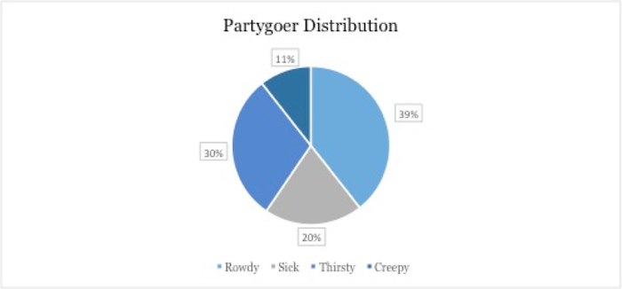

Watchers performed a whopping 361 interventions throughout SP16, 141 of which were distractions with a non-alcoholic beverage, 181 of which were a distraction with conversation, and 39 of which were stopping an unwanted sexual advance.

The most common partygoer encountered was the rowdy partygoer, followed by thirsty, sick, and creepy.

On Slope Day 2016, watchers were utilized for two separate shifts that compromised almost the entirety of the day’s events. Watchers performed more than 70 interventions throughout the course of the day which helped to ensure the safety of students during this high-risk end-of-year celebration. Watchers flagged Cornell EMS 12 times during the day, which resulted in 15 EMS transports.
— Gabe Joseph, VP Data Analysis